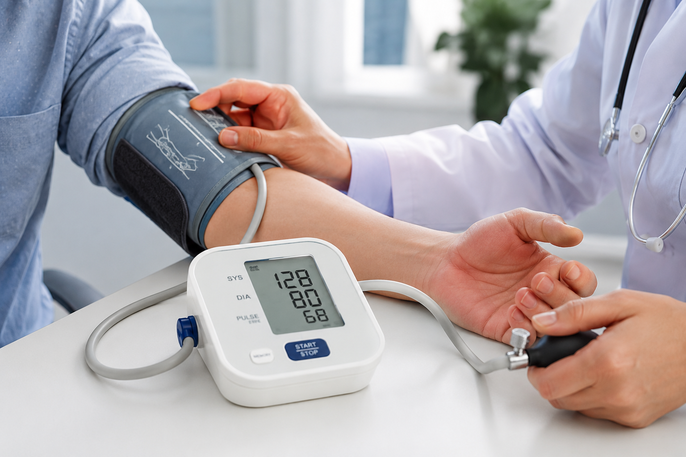
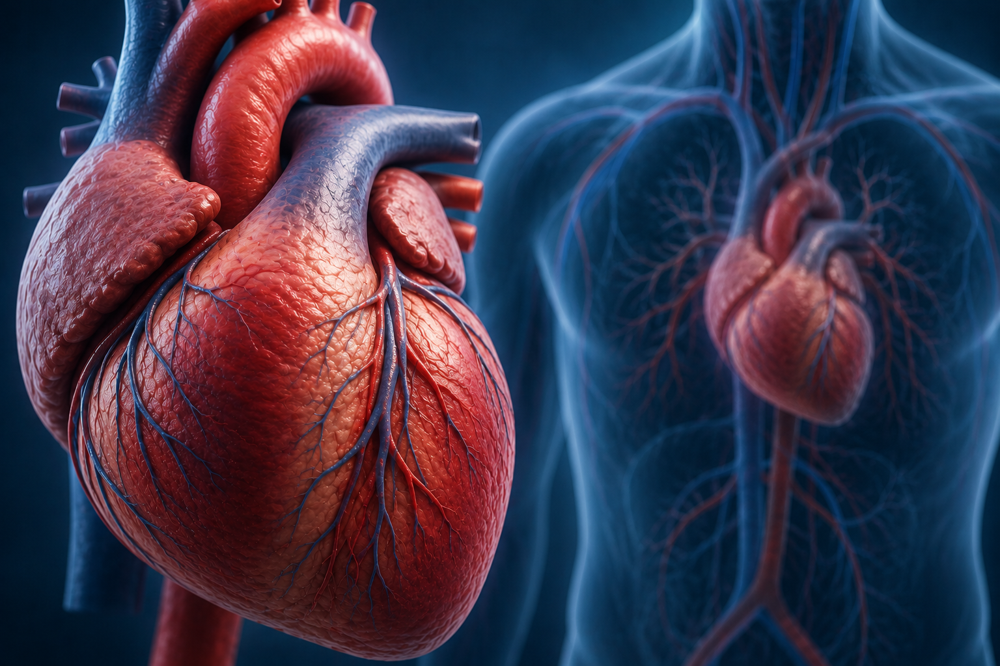

ارتفاع ضغط الدم
حالة يرتفع فيها ضغط الدم داخل الأوعية الدموية، وقد تحتاج إلى المتابعة المنتظمة للحفاظ على صحة القلب.
معلومات توعوية
منصة رقمية متخصصة تساعد الفريق الطبي على متابعة مرضى القلب وتنظيم معلوماتهم الصحية بطريقة واضحة وسهلة، مع الوصول إلى السجلات الحيوية والمواعيد ومعلومات المرضى في مكان واحد.
متابعة صحة القلب
معلومات منظمة تساعد الفريق الطبي
منصة نبض
رعاية ومتابعة منظمة
نبض هي منصة رقمية مخصصة لمساعدة الفريق الطبي على متابعة مرضى القلب وتنظيم معلوماتهم الصحية بطريقة واضحة وسهلة. تجمع المنصة بيانات المرضى والسجلات الحيوية والمواعيد في مكان واحد لتسهيل المتابعة اليومية واتخاذ قرارات أفضل.
الوصول إلى معلومات المرضى وتنظيم بياناتهم بسهولة.
متابعة القراءات الحيوية السابقة وتسجيل القراءات الجديدة.
عرض المواعيد وتنظيم متابعة المرضى بطريقة واضحة.
تعرف على مجموعة من الحالات القلبية الشائعة وبعض المعلومات الأساسية عنها للمساعدة في زيادة الوعي بصحة القلب.

حالة يرتفع فيها ضغط الدم داخل الأوعية الدموية، وقد تحتاج إلى المتابعة المنتظمة للحفاظ على صحة القلب.
اضطراب في معدل ضربات القلب أو انتظامها، ويمكن متابعة نظم القلب من خلال الفحوصات والقراءات .
حالة تتأثر فيها الشرايين التي تغذي عضلة القلب بالدم، ويمكن متابعتها من خلال الفحوصات والقراءات المناسبة.

حالة لا يستطيع فيها القلب ضخ الدم بالكفاءة المطلوبة، وتحتاج إلى متابعة طبية مستمرة وخطة رعاية مناسبة.
اتباع العادات الصحية والمتابعة المنتظمة يساعدان في الحفاظ على صحة القلب وتقليل عوامل الخطر المرتبطة بأمراض القلب.
حافظ على نشاطك البدني بانتظام واختر الأنشطة المناسبة لك.
اختر غذاءً متوازنًا يحتوي على الخضروات والفواكه والعناصر المفيدة.
تابع ضغط الدم ومعدل نبض القلب والمؤشرات الصحية بشكل منتظم.
احرص على الفحوصات الدورية واستشر الطبيب عند وجود أي أعراض مقلقة.
الوقاية تبدأ بخطوات بسيطة وعادات صحية مستمرة.
صحة قلبك أولًا
نصائح توعوية للحياة الصحية
الاهتمام بصحة القلب يبدأ من العادات اليومية والمتابعة الصحية المنتظمة. إليك بعض النصائح العامة التي تساعد في الحفاظ على صحة القلب.
مارس النشاط البدني المناسب بانتظام وحافظ على الحركة خلال يومك.
اختر الأطعمة المتنوعة والغنية بالعناصر الغذائية المفيدة لصحة القلب.
تابع ضغط الدم ومعدل نبض القلب واحرص على الفحوصات الدورية.
راجع الطبيب بانتظام واتبع الإرشادات الصحية المناسبة لحالتك.
احصل على قدر كافٍ من النوم وحافظ على روتين يومي متوازن.